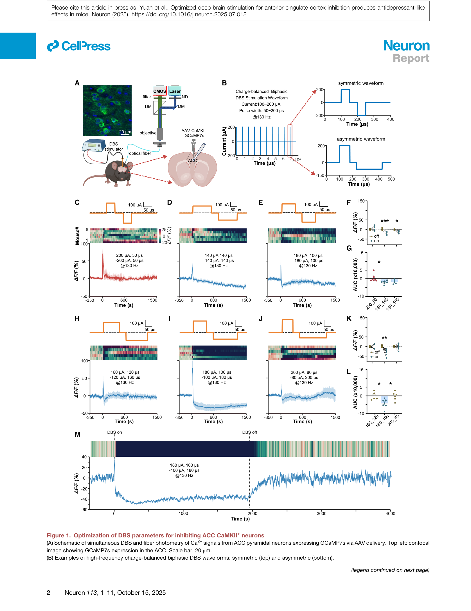
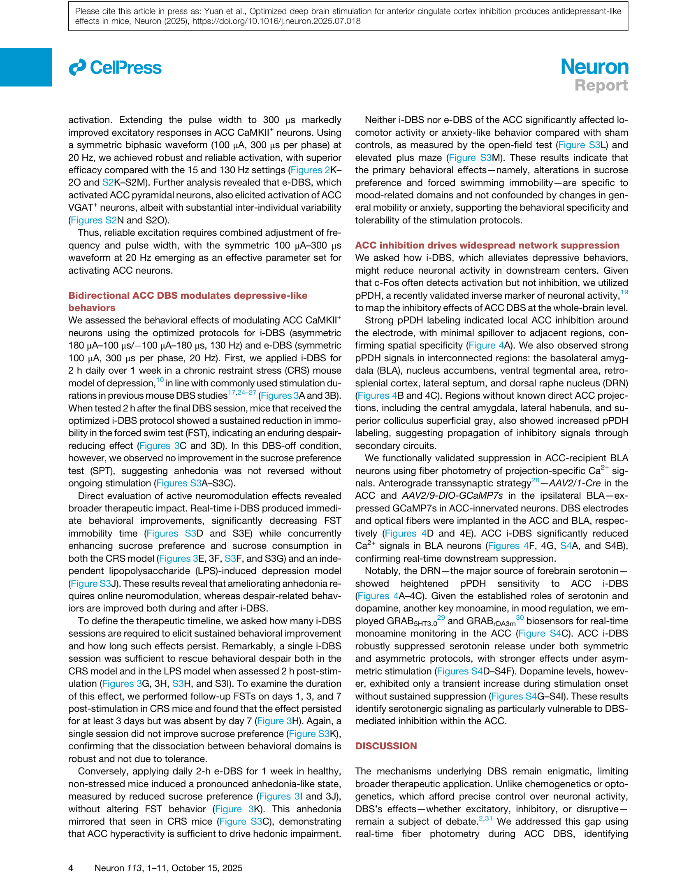
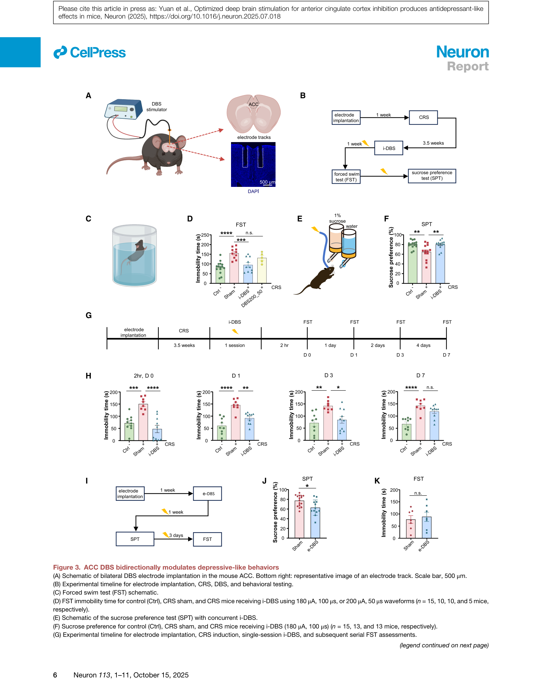
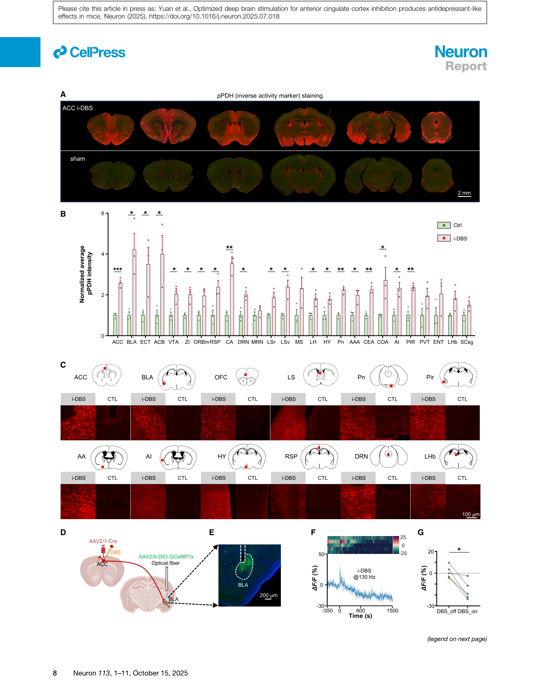

论文精读说明文档
Optimized Deep Brain Stimulation for Anterior Cingulate Cortex Inhibition Produces Antidepressant-Like Effects in Mice
系统优化深脑电刺激波形参数，实现对前扣带皮层的精确抑制，并在小鼠抑郁模型中产生快速、持久的抗抑郁行为效果。
论文信息
Neuron - 2025 - Yuan - Optimized deep brain stimulation for anterior cingulate cortex inhibition produces antidepressant-like effects.pdf
一句话定位
这篇文章相当于"DBS 参数手册 + 行为验证"：用光纤钙信号（fiber photometry）作为实时读出，系统扫描波形对称性、脉宽和频率的组合，在小鼠前扣带皮层（anterior cingulate cortex，ACC）里找到了可靠抑制神经元活动的不对称双相高频参数，以及可靠兴奋的对称长脉宽低频参数；再用抑郁动物模型证明"抑制 ACC → 抗抑郁，兴奋 ACC → 促快感缺失"的因果链。
为什么值得读
DBS 参数优化缺乏细胞级机制指导
临床 DBS 参数长期依赖经验调整，核心原因是刺激伪迹（stimulation artifact）覆盖了刺激期间的电生理信号，使得只能分析刺激结束后的数据，无法实时看到刺激对单个神经元的影响。论文作者把这个问题明确写在 Introduction 里。本文用光学方法（钙信号不受电伪迹影响）绕开这个限制，实现了"边刺激边读神经元状态"的参数优化闭环，是在工程约束下的巧妙设计。
ACC 与抑郁：一个有明确靶标意义的脑区
人类 MDD（重度抑郁症，major depressive disorder）患者的 ACC 持续显示代谢和结构异常。化学遗传学（chemogenetics）和光遗传学（optogenetics）抑制 ACC 锥体神经元可以缓解小鼠抑郁样行为，但这两类工具无法用于临床。DBS 是唯一可以临床翻译的精确调控手段，因此"怎样用 DBS 精确抑制 ACC"具有直接的转化研究价值。
抑制性刺激范式的反直觉意义
传统观点认为 DBS 的高频刺激主要是激活局部神经元（因为细胞外电流直接去极化），但本文发现不对称高频 DBS 实际上产生广泛区域抑制——而且同时压制了锥体神经元（excitatory）和 VGAT+ 中间神经元（inhibitory），排除了"通过兴奋抑制性中间神经元间接抑制锥体神经元"的经典解释。这个反直觉结果对理解 DBS 的细胞机制具有重要意义。
术语先说明
图文导读




机制横向对照
下表汇总了本文关键参数组合与神经效应的对应关系，以及对理解刺激波形-神经响应映射的参考价值：
| 参数组合 | 波形特征 | 频率 | ACC 神经效应 | 行为结果 | 可能的细胞机制 |
|---|---|---|---|---|---|
| 不对称 180-100（i-DBS） | 180 μA/100 μs + 100 μA/180 μs，充电平衡 | 130 Hz | 锥体神经元 + 中间神经元均受抑制，数秒内起效，可逆 | 抗抑郁（FST↓，SPT↑），持续 ≥3 天 | 去极化阻滞（Na⁺ 通道持续失活）+ 突触囊泡耗竭；不依赖局部 GABAergic 回路 |
| 对称 200-50（无效对照） | 200 μA/50 μs 对称 | 130 Hz | 仅短暂 Ca²⁺ 瞬态，无持续抑制 | — | 短脉宽使每脉冲注入电荷不足以维持阻滞；过短时间内 Na⁺ 通道可以恢复 |
| 对称 100-300（e-DBS） | 100 μA/300 μs 对称 | 20 Hz | 锥体神经元稳健兴奋，可重复 | 健康小鼠快感缺失（SPT↓），FST 不受影响 | 长脉宽允许更多 Na⁺ 通道激活；低频避免失活积累；每脉冲净效果为去极化 |
| 对称 140-140（部分对照） | 140 μA/140 μs 对称 | 130 Hz | 抑制弱且不一致 | — | 波形对称时两相效果相互抵消，净抑制作用减弱 |
和你的研究怎么接上
DBS 参数空间与差分测量的伪迹排查
论文 Introduction 明确指出刺激伪迹是 DBS 实时电生理记录的核心瓶颈，原文为："In humans, however, stimulation artifacts restrict analysis to post-stimulation epochs and preclude cellular resolution."这与你的 TIM 论文处理的技术问题属于同一类——胞外电刺激（EES, extracellular electrical stimulation）产生的伪迹污染电生理读出。区别在于场景和解决策略：
| 维度 | Yuan 2025（在体 DBS） | 你的 TIM 论文（脑片 patch clamp） |
|---|---|---|
| 伪迹来源 | DBS 电极在脑组织中产生的大幅电场 | 胞外刺激电极产生的 V_e(t) 叠加到 V_m 记录 |
| 解决策略 | 绕开伪迹：改用光学读出（Ca²⁺ 信号） | 修正伪迹：差分测量减去 V_e(t) |
| 时间分辨率 | ~100 ms（Ca²⁺ 动力学限制） | μs 级（保持电生理原生时间分辨率） |
| 信息内容 | 群体平均神经元活动 | 单细胞跨膜电位动态 |
你的差分方法有潜力将 DBS 期间的单细胞电生理记录变为可能（至少在离体脑片上），这是目前光学方法无法提供的时间分辨率信息。Yuan 2025 可以作为你论文"应用动机"部分的典型引用案例。
高频刺激诱导抑制的细胞机制
本文最反直觉的结果——高频 DBS 同时抑制锥体神经元和 GABA 能中间神经元——意味着抑制机制不依赖局部抑制回路，很可能涉及通道级别的内在属性：去极化阻滞（Na⁺ 通道持续失活）、突触囊泡耗竭，或细胞外 K⁺ 积累导致的静息电位改变。你的差分膜片钳方法在脑片上可以直接区分这些机制：
- 去极化阻滞：在 DBS 脉冲期间测量跨膜电位，如果 V_m 持续接近 Na⁺ 通道失活阈值（约 −40 mV），则支持此机制
- 突触囊泡耗竭：通过比较 DBS 期间 EPSC 幅度的衰减动力学来区分
- K⁺ 积累：表现为刺激期间 V_m 缓慢去极化而非锁相于刺激频率的振荡
这些都是你的方法能回答、而光学方法无法回答的具体问题。
行为输出与单细胞响应的链路
Yuan 在细胞（Ca²⁺ 信号）→ 行为（FST/SPT）→ 回路（pPDH 全脑映射）三个层面都建立了 DBS 效果的证据，但缺少刺激期间单神经元跨膜电位响应的直接记录，无法从生物物理层面解释为什么不对称波形比对称波形更有效。这是你的差分测量方法可以接入的具体科学问题，也是将技术论文（TIM）和机制研究（ACC DBS）连接起来的切入点。你的等效电路框架（R_s, C_m, R_m，离子通道动力学）可以直接用于预测和解释不对称波形下 V_m 响应的时间进程，从电容性-电阻性分流的角度给出 Yuan 现象学发现的生物物理解读。
证据链和局限
强项
- 系统性参数优化框架：通过波形对称性 × 脉宽 × 频率的系统扫描，以实时光学读出指导参数选择，提供了可复制的 DBS 优化方法学。
- 双向因果证据：抑制 ACC → 抗抑郁，兴奋 ACC → 促快感缺失，形成完整的双向因果链，远超单向操控研究。
- 多层验证：细胞（Ca²⁺）→ 行为（FST/SPT）→ 回路（pPDH + BLA 光纤）→ 分子（5-HT/DA 传感器），证据链完整。
- 两种独立抑郁模型：CRS（心理性应激）和 LPS（炎症性）交叉验证，增强了结论的普适性。
- 运动和焦虑对照：OFT 和 EPM 排除了运动能力或焦虑水平变化对行为测试的混淆。
不足之处
- Ca²⁺ 信号时间分辨率局限：fiber photometry 只能报告群体平均 Ca²⁺（~100 ms），无法解析刺激期间单个神经元的跨膜电压动态，无法区分直接去极化/超极化效应与突触介导的间接效应。
- DBS 空间选择性未量化：论文声称 pPDH 标记显示"局部 ACC 抑制，溢出极少"，但缺乏对 DBS 电场空间分布的计算建模验证——实际激活/抑制了多大范围的组织？
- 不对称波形机制缺失生物物理解释：为什么不对称比对称更有效地抑制？论文只有现象学描述，没有通道动力学建模或离体电生理验证。
- 小鼠模型到临床的外推局限：FST 作为抑郁测试指标在领域内本身存在争议；小鼠抑郁模型（CRS/LPS）与人类 MDD 的异质性和治疗抵抗性有本质差异。
- 长期效果和安全性数据不足：仅追踪 7 天的效果持续性；慢性 DBS 的组织损伤、适应性改变、反弹效应均未评估。
建议阅读顺序
- 先读 Abstract + Introduction，定位问题：DBS 为什么难做到"精确抑制 ACC"，刺激伪迹如何成为瓶颈，作者如何用光学方法解决这个问题。
- 看 Figure 1 + 对应 Results 段落，理解不对称双相波形的参数筛选逻辑——这是全文方法论的核心。
- 看 Figure 2，理解兴奋性参数的筛选逻辑，重点关注频率和脉宽必须协同调节这一结论。
- 看 Figure 3，逐一对照行为测试：FST 的 onset 和持续时间，SPT 的在线依赖性，OFT/EPM 对照。
- 看 Figure 4，理解 pPDH 全脑映射的逻辑：哪些区域是直接投射，哪些是多突触传播，DRN 的特殊意义。
- 最后读 Discussion，关注作者如何解释高频抑制机制（他们选择不给出确定答案）和临床转化的前景与限制。